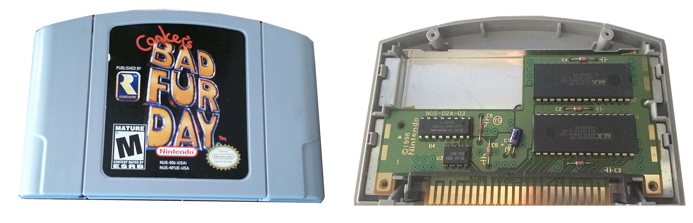

The Nintendo 64, stylized as NINTENDO64 and abbreviated as N64, is Nintendo's third home video game console for the international market. Named for its 64-bit central processing unit, it was released in June 1996 in Japan, September 1996 in North America and Brazil, March 1997 in Europe and Australia, and September 1997 in France. It is the last major home console to use the cartridge as its primary storage format until Nintendo's seventh console, the Nintendo Switch, released in 2017. The console was discontinued in mid-2002 following the launch of its successor, the GameCube, in 2001. It is the first Nintendo console to feature true 3D effects. Super Mario 64 and Pilotwings 64 were made to show this off, as seen in the 3D Mario environment.
Codenamed "Project Reality", the Nintendo 64 design was mostly complete by mid-1995, but its launch was delayed until 1996, when Time named it Machine of the Year. It was launched with three games: Super Mario 64 and Pilotwings 64 (worldwide) and Saikyō Habu Shōgi (exclusive to Japan). As part of the fifth generation of gaming, the system competed primarily with the Sony PlayStation and the Sega Saturn. The suggested retail price at its United States launch was US$199.99, and 32.93 million units were sold worldwide. The console was released in a range of colors and designs over its lifetime. In 2015, IGN named it the 9th greatest video game console of all time.

The most graphically demanding Nintendo 64 games that arrived on larger 32 or 64 MB cartridges are the most advanced and detailed of the 32-bit/64-bit generation. In order to maximize use of the Nintendo 64 hardware developers had to create their own custom microcode. Nintendo 64 games running on custom microcode benefited from much higher polygon counts in tandem with more advanced lighting, animation, physics and AI routines than its 32-bit competition. Conker's Bad Fur Day is arguably the pinnacle of its generation combining multicolored real-time lighting that illuminates each area to real-time shadowing and detailed texturing replete with a full in game facial animation system. The Nintendo 64's graphics chip is capable of executing many more advanced and complex rendering techniques than its competitors. It is the first home console to feature trilinear filtering, which allowed textures to look very smooth. This contrasted with the Saturn and PlayStation, which used nearest-neighbor interpolation and produced more pixelated textures. Overall however the results of the Nintendo cartridge system were mixed and this was tied primarily to its storage medium.
A total of 388 games were released for the console, though there were a few that were exclusively sold in Japan. For comparison, rivals PlayStation and the Sega Saturn received around 1,100 games and 600 games respectively, while previous Nintendo consoles such as the NES and SNES had 768 and 725 games released in the United States. However, the Nintendo 64 game library included a high number of critically acclaimed and widely sold games. According to TRSTS reports, three of the top five best-selling games in the U.S. for December 1996 were Nintendo 64 games (both of the remaining two were Super NES games). Super Mario 64 is the best selling game of the generation, with 11 million units sold beating the PlayStation's Gran Turismo (at 10.85 million) and Final Fantasy VII (at 9.72 million) in sales. The game also received much praise from critics and helped to pioneer three-dimensional control schemes. GoldenEye 007 was important in the evolution of the first-person shooter, and has been named one of the greatest in the genre. The Legend of Zelda: Ocarina of Time set the standard for future 3D action-adventure games and is considered by many to be one of the greatest games ever made. This trend followed Hiroshi Yamauchi's strategy, announced during his speech at the Nintendo 64's November 1995 unveiling, that Nintendo restrict the number of titles produced for the Nintendo 64 so that developers would focus on developing games to a higher standard instead of trying to outdo their competitors with sheer quantity.